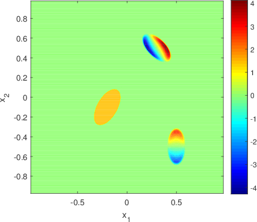
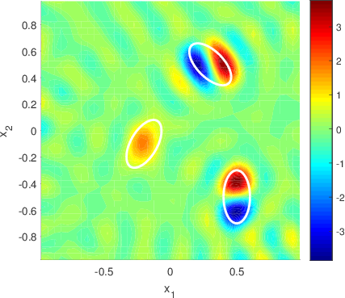
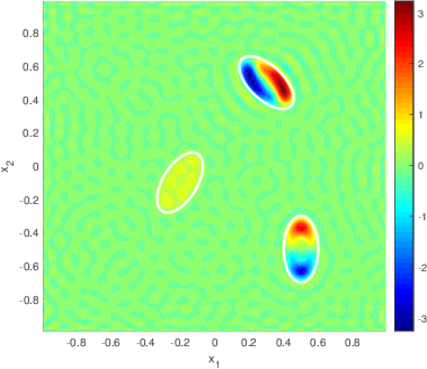
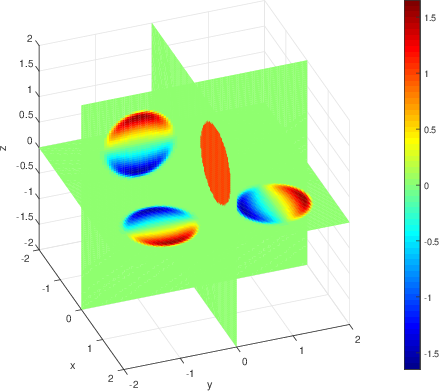
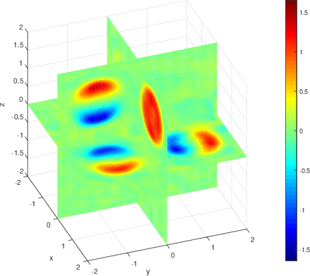

About inverse scattering problems
In inverse scattering problems we are interested in the question:
What can we say about an unknown scatterer, if we know how the scattered field looks outside the obstacle?
This is the converse of a forward problem, essentially asking:
If we know what the obstacle is, how does it reflect and scatter waves?
Our research is mostly about potential scattering: we seek to find the properties of some potential function in for example the Schrödinger or beam equations.
An inverse scattering problem
(The pictures appearing on this page are reproduced from original articles (cited below) for teaching purposes. Please contact the author for any inquiries regarding the figures or videos.)
Consider the $n$-dimensional differential operator of form
$$
H_4:= \Delta^2 + \vec{q}\cdot\nabla + V,
$$
where $\vec{q}$ and $V$ are functions from some suitable function spaces. We study the scattering problem
$$
H_4 u = k^4u,\quad k>0,\quad u=u_0 + u_\mathrm{sc},
$$
under certain radiation conditions (the solution to this equation should look like an out-going wave).
The function $u_0(x,k,\theta):= \mathrm{e}^{\mathrm{i}k(\theta,x)}$ is an in-coming plane-wave and $\theta\in S^{n-1}$ is the angle of incidence.
Here $u_\mathrm{sc}$ is the scattered wave and $k>0$ is called the wavenumber (it is related to the frequency of the incident wave).
By using some standard theory of ordinary differential equations (see below) we may turn this problem into an integral equation of form
$$
u = u_0 - \int_{\mathbb{R}^n} G_k^+(\vert x-y\vert)( \vec{q}\cdot\nabla u + Vu) \mathrm{d}y.
$$
The direct scattering problem asks us to find a solution to the above equation when given the coefficients $\vec{q}$ and $V$.
However, our main interest is in the inverse problems. In this case we seek answer to the question:
Given some relevant scattering data (measurements far away from the obstacles), what can we say about the unknown coefficients in our equation?
For more thorough discussion on a one-dimensional problem, see our example with Markus Harju here (or here).
Below one can find how the scattered wave (the real part of it) for the time-harmonic problem $\partial_t^2u + \Delta^2 u + \vec{q}\cdot\nabla u + Vu =0$ looks like in 2D when it is moving in time.
In this example we used two potentials $\vec{q}=(q_1,q_2)$ and $V$, decipted as ellipses in the picture.
The incident wave in this example is moving from the lower left corner diagonally across the region of interest.
(See also a video of the scattered field with one potential $V$ in 3D here.)
Some techniques applied
Mathematically inverse problems provide a diverse field of study. The main tools that we utilize for inverse scattering problems involve
- Theory of partial differential equations
- Distribution theory
- Integral equations
- Operator theory
- Fourier analysis
Let's see how they appear in the above problem.
We call a distribution $E$ a fundamental solution to a differential operator $P(D)$ if it satisfies $P(D)E=\delta$ in the sense of distributions.
Here $\delta$ is the Dirac $\delta$-distribution. It is a small exercise to show that $\delta$ is the unit for convolution product, i.e. $\delta*f=f*\delta=f$.
Now we notice that (at least for some differential operators) we have $P(D)(E*f)=f$, that is, the convolution $u:= E*f$ solves the inhomogeneous equation $P(D)u=f$.
Note that the fundamental solution $E$ is not unique. Indeed, we can always add a solution $g$ of the homogeneous equation $P(D)g=0$ to $E$ and have a new fundamental solution.
We can rearrange our equation $H_4u=k^4u$ into $(\Delta^2-k^4)u = -(\vec{q}\cdot\nabla u +Vu)$. It is possible to show that the function
$$
G_k^+(\vert x\vert) = \frac{\mathrm{i}}{8k^2}
\left(
\frac{\vert k\vert}{2\pi\vert x\vert}
\right)^{\frac{n-2}{2}}
\left(
H_{\frac{n-2}{2}}^{(1)}(\vert k\vert\vert x\vert)
+
\frac{2\mathrm{i}}{\pi} K_{\frac{n-2}{2}}(\vert k\vert\vert x\vert)
\right)
$$
is a fundamental solution to $\Delta^2-k^4$, for $k>0$. Here $H^{(1)}$ is the Hankel function of first kind and $K$ is the Macdonald function.
By convolving this fundamental solution with our differential equation we obtain the integral equation discussed above.
This choice of fundamental solution is crucial for the scattering problem because we need to justify the correspondence of the scattering problem and integral equation:
this particular fundamental solution satisfies the radiation conditions.
It can be proved (if the coefficients $\vec{q}$ and $V$ are smooth enough, possibly with compact supports) that these differential and integral equations are equivalent under the radiation conditions.
From certain estimates for these differential and integral operators we then conclude that this integral equation has a unique solution $u$ such that $u_\mathrm{sc}$ belongs to the Sobolev space $H_{-\delta}^2(\mathbb{R}^n)$.
The discussion so far has dealt with the forward problem of finding a solution to the scattering problem when given the properties of the scatterer ($\vec{q}$ and $V$).
To consider the inverse problem of finding these properties we require some suitable scattering data. For this purpose we need to study how the scattered field behaves far away.
From the asymptotic formulas for Hankel and Macdonald functions it follows that the solution $u$ satisfies
$$
u(x,k,\theta) =
\mathrm{e}^{\mathrm{i} k(x,\theta)} - C_n\frac{k^{\frac{n-7}{2}}\mathrm{e}^{\mathrm{i} k\vert x\vert}}{\vert x\vert^{\frac{n-1}{2}}}
A(k,\theta,\theta') + o\left(\frac{1}{\vert x\vert^{\frac{n-1}{2}}} \right), \quad \vert x\vert \to \infty,
$$
where $\theta'\in S^{n-1}$ is the angle of measurement and the function
$$
A(k,\theta,\theta') =
\int_{\mathbb{R}^n}
\mathrm{e}^{-\mathrm{i} k (\theta',y)}\left[ \vec{q}\cdot\nabla u +Vu \right] \mathrm{d} y,
$$
is called the scattering amplitude. This scattering amplitude is the data for the inverse problem and it is something that we hope to measure in practical applications.
In [3] we proved that this scattering amplitude satisfies so-called Saito's formula.
As a consequence the scattering amplitude uniquely corresponds to the combination of the coefficients $\beta:= -\frac{1}{2}\nabla\cdot\vec{q}+V$.
One is encouraged to compare this result to the one-dimensional case [1] (see also), where we obtained the recovery of this combination by the method of Born approximation.
This technique works by noting that the scattering amplitude (or reflection coefficient in 1D) is almost the Fourier transform of the coefficients.
If the frequency (equivalently $k$) is large enough then it turns out that this approximation is quite good and we may attempt to recover the coefficients from the scattering amplitude by inverse Fourier transform (inverse Born approximation).
Recently we have proved in [2] that in two dimensions for certain class of functions the difference between the inverse Born approximation $q_B$ and $\beta$ is a bounded and continuous function.
Moreover, if the coefficients $\vec{q}$ and $V$ are real valued then $q_B - \beta$ belongs to the Sobolev space $H^s$ for any $s<2$.
Below is a numerical example of this reconstruction procedure in two dimensions.
The left picture depicts the true (unknown) potentials to be reconstructed and the middle and right figures show the numerical reconstruction calculated from the scattering amplitude.
The middle picture is made in 80-by-80 grid from 480 measurements, while the right picture is drawn in 100-by-100 grid from 4096 measurements (1% noise level). The difference in the amount of data is clear.



The figures show that we can recover the shape and location (and also the height) of the unknown potentials reasonably. The numerical computation is done essentially in the same manner as the 1D example. See [2] for more details. Similar reconstruction is also possible in three space dimensions, though the computation is much more demanding on the hardware side due to the need to use matrices with large dimensions [4].

Perhaps it can be interesting to note that one can have a non-trivial potential $\vec{q}$ which is divergence-free, that is, $\nabla\cdot\vec{q}=0$ (it is quite easy to find examples of such potentials). In this case our theory guarantees only the recovery of singularities of the potential $V$ (because $\beta=V$). Note also that if the supports of $\vec{q}$ and $V$ overlap, the Born approximation alone is not able to distinguish between the different potentials. See also this edge-case, where the reconstruction fails.[1] Tyni T, Harju M and Serov V, Recovery of singularities in a fourth-order operator on the line from limited data, Inverse Problems 32 (2016), 075001
[2] Tyni T and Harju M, Inverse backscattering problem for perturbations of biharmonic operator, Inverse Problems 33 (2017), 105002 [3] Tyni T and Serov V, Scattering problems for perturbations of the multidimensional biharmonic operator, Inverse Problems & Imaging 12:1 (2018), 205-227.
[4] Harju M and Tyni T, Numerical solution of the direct and inverse scattering problems in 3D, Submitted May 2018.